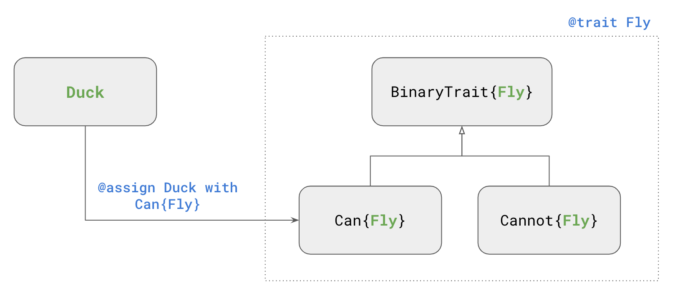
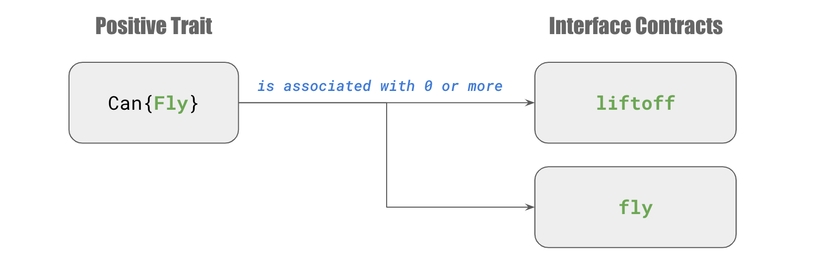
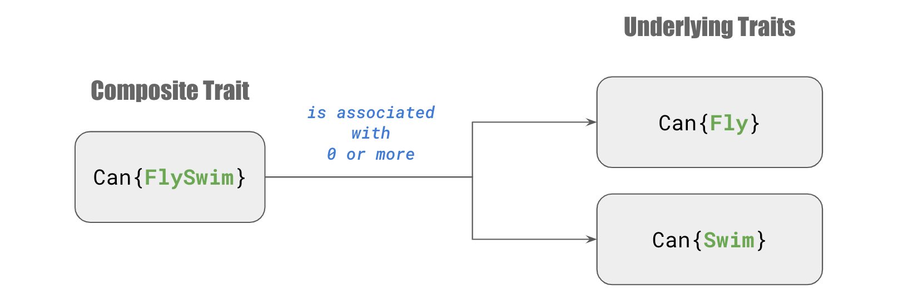

Traits
A trait is defined as an abstract type that is used in the parametric types BinaryTrait, Positive, and Negative. You may assign any data type to the positive/negative trait type.
For the sake of readability, there are predefined aliases to Positive and Negative types. For example, Can is the same type as Positive. See Using custom prefixes for more information.

Interface Contracts
The positive side of a trait is usually associated with a set of interface contracts.

Composite Traits
A composite trait is one that exhibits the characteristics of all of its underlying traits. The underlying interface contracts are applicable as well.
